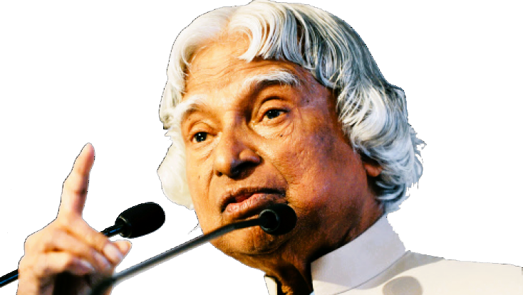

A P J ABDUL KALAM

Great indain scientist politician who played a leading role in the development of india's
missile and numclear weapons prograns.
About The Legend
-
kalam earned a degree in aeronatiocal engineering from the madras
Institute of technology and in 1958 joined the Definece research and
Develoment organisation (DRDO).
- in 1969. he moved to the indian space research orginisation ,whrer he was
project director of thr SLV-3, the first satelite launch vehicle that was both
designed and produced in india.
- Rejoining DRDO in 1982, kalam planned the program that produced a
number of successful missiles, which helped earn him the nichname " missile
man."
- among those succsess was agni, indaia's first intermediate-range ballistic
missile,which incorporated aspects of SLV-3
- he also played a pivotal organisational , technical , and political role in
india's pokhram-2 nucleear test in 1998 , the first since the original nuclear test
by indai in 1974.
- from 1992 to 1997 kalam was scientific adviser to the minister, and
he later served as principal scientific adviser (1000-2001)
to government
with rank of cabinet minister.
- While delivering a lecture at the Indian institute of management Shillong,
kalam collapsed and died from an apparent cardiac arrest on 27 july 2015,
aged 83.
-
Wheeler Island , a national misssile test site in Odisha, was renamed kalam
Island
in september 2015.
- A prominent road in new delhi was renamed from Aunagzeb road to Dr
A P J Abdul kalam Road
in august 2015.
- in february 2018, scientists from the Botenical survey of india named a
newly found plant species as drypets kalam in his honour.
for more information , check out A P J Abdul Kalam on Wikipedia. [Developed by @ Sushant
Gaurav.]